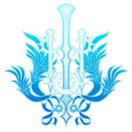

PowerMeter · Design system
Rosso come segnale, nero come campo.
La tua palette (#DB0000 · nero · bianco · #564F4F · #7F1112) sulla struttura Nocturne: densa, calma, bordi sottili. Il rosso significa sempre “tu / attivo / attenzione”: mai decorazione.
Demo A · Carbonionero dominante, rosso solo come linea e bagliore
Pulsante primario: contorno rosso su trasparente. Voce di menu attiva: testo rosso su #1F1B1B. Barra del titolo nera.
Demo B · Bracefondo nero, rosso scuro pieno come presenza · scelta
Pulsante primario: pieno #7F1112 con bordo #DB0000. Voce attiva e barra del titolo in #7F1112. Bande Supporter/landing in #7F1112.
Token della palette corrente
{{ t.n }}
{{ t.k }} · {{ t.v }}
Classi · icone e colori ufficiali
{{ c.i }}{{ c.n }}{{ c.c }}
Colori campionati dalle icone ufficiali. Brawler: icona in arrivo (solo KR/TW).
Rarità · 6 gradi (nomi da confermare)
{{ r.n }}{{ r.c }}
posseduto · mancante
Fazioni e stati

Elyos · #55C2E9{{ s.n }}{{ s.c }}
Tipografia
Inter 500 · Titoli
Inter 400 per l’interfaccia. Fallback dichiarati: Noto Sans (cirillico), Noto Sans JP / KR / SC per CJK.
18.420 · 27,7% · 5,5 M
JetBrains Mono per ogni numero: cifre tabellari, le colonne non “ballano” mentre cambiano.
Русский · Deutsch: Schadensverlauf · 日本語 ダメージ · 한국어 피해량 · 简体中文 伤害
Logo
PowerMeter
by Letrion Labs
32 · 24 · 16 px (tray)
Tre barre di potenza crescenti; l’ultima taglia in diagonale come la punta di un’ala.
Componenti base
KILLWIPE
♥ Supporter
Back%: colpi alle spalle del bersaglio
Toast · Link copiato
Spaziature e raggi
Scala Nocturne 0,7× (2,8 · 5,6 · 8,4 · 11,2 · 16,8 · 22,4 px). Raggi 4 / 6 / 8 / 12. Elevazione = bordo sottile + ombra ambiente, niente ombre pesanti.Motion
150–250 ms, ease-out. Nel widget si muovono solo le barre (300 ms). Con “riduci movimento” le barre saltano al valore senza transizione.Icone
Phosphor Regular, lineari, 16–20 px. Icone di classi e oggetti: segnaposto con iniziali finché non arrivano i dati di gioco.